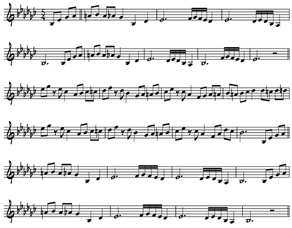

The Dave Brubeck Quartet was a very popular group on college campuses during the 50's and into the '60's. His recordings Jazz Goes to College and Time Out were big hits. Brubeck and his group – Paul Desmond (alto sax), Eugene Wright (bass), Joe Morello (drums) – actually made recordings on college campuses often to the chagrin to some college administrators who thought jazz music was only appropriate for parties and not for either recordings or the concert stage.
A student of French classical composer Darius Milhaud at Mills College in the 40's, Brubeck brought much of what he learned to jazz. His compositions are filled with counterpoint, harmonies and forms that show the influence of his European teacher. You heard a composition of his The Duke in the discussion of Miles Davis and Gil Evans. What is thought of to be Brubeck's most famous song, Take Five, was not written by him but by alto saxophonist. Paul Desmond. Desmond was the personification of the cool jazz sax player. His airy sax sound coupled with lyrical solos is being copied today.
Take Five is one of the most popular jazz songs ever written. The title refers to the fact that the song is played in a 5/4 meter, five beats to the bar, not common at all with jazz players. The famous melody is announced by an equally famous bass line. I've played the song many times and can tell you that as soon as the audience hears the bass part, the applause starts as the wait for the melody to begin. Let's watch and listen the Dave Brubeck Quartet perform Take Five from a television show done in the 1960's.
